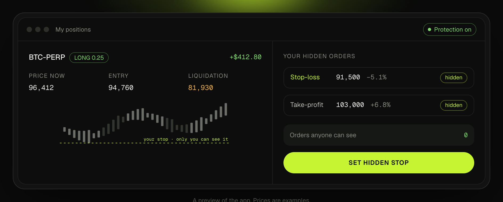
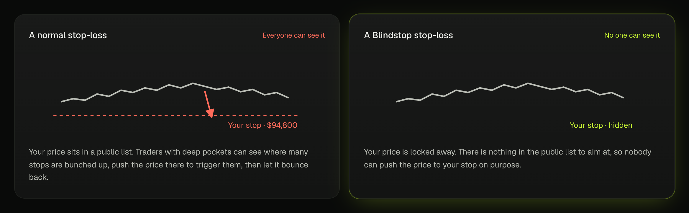
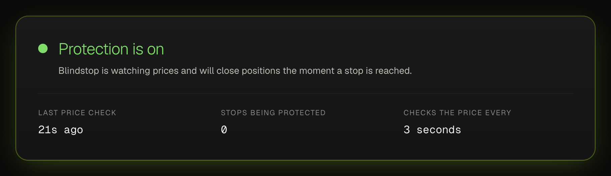
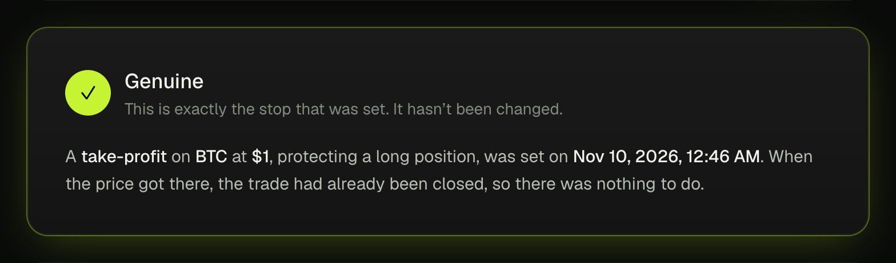

Blindstop gives traders on Hyperliquid stop-losses that nobody else can see. This guide explains what we built in everyday words, what’s proven so far, and gives you ready-to-post tweets and a script for the demo video. No technical background needed.

A stop-loss is an order that says “if the price drops to X, sell, so I don’t lose more.” Almost every trader uses one.

From the Blindstop website: the same price chart twice. On the left, your stop is a line anyone can aim at. On the right, there’s nothing to aim at.
Gloam hides who you are. Blindstop hides where your stops are.
Four steps. The trader only does the first one; Blindstop handles the rest.
You pick your price. It’s locked on your own device before it goes anywhere, like sealing a letter.
A sealed computer that not even we can look inside checks the price every few seconds.
When the price reaches your level, it closes your position straight away and records what happened.
Afterwards, you can publish proof of exactly where your stop was, and when you set it.
Be upfront about this list. Honesty is part of the pitch.
A normal stop-loss is like taping a note to your front door that says “I’ll sell everything if the price hits $94,800.” Anyone walking past can read it. Blindstop puts that note in a sealed envelope, hands it to a trusted guard who can’t be bribed or peeked at, and the guard acts the moment the price gets there.
Blindstop can only close trades. It can never withdraw, send or move your funds.
It reads the price straight from Hyperliquid. Nobody can feed it a fake one.
Optional backup stop near liquidation, in case Blindstop is ever offline.
Every line below is backed by something anyone can check. Stick to these and nobody can poke holes in the post.
| Claim | Status |
|---|---|
| Live on test networks (NEAR testnet + Hyperliquid testnet). Test money only. | ● Done |
| Stops are locked in the browser and opened only inside the secure sealed computer. | ● Done, tested live |
| The sealed computer checks every 3 seconds and signs every check on the NEAR blockchain. | ● Done, visible on the Status page |
| 9 out of 9 break-in attempts blocked: fake reports, replays, stealing someone else’s order, faking prices, and more. | ● Done, log in the repo |
| The order-signing code matches Hyperliquid’s official software, byte for byte. | ● Done, automated tests |
| Anyone can check a stop was genuine after it finished (the “Check a stop” page). | ● Done |
| Open source. All code is public on GitHub. | ● Done |
| A hidden stop closing a real position on Hyperliquid, end to end, on camera. | ● Next: needs test funds, then record |
| Private funding through Gloam. | ○ Manual steps for now |
Post the demo video after the live run (the orange row) is recorded. Until then, say “working on testnet” and show the setup, the hidden stop, the empty public order list and the Status page. Don’t say it has closed a real trade until the video shows it.


Left: the Status page shows live that protection is on. Right: “Check a stop” confirms a past stop is genuine.
The audience is traders, not engineers. Swap jargon for what it means to them.
| Say this | Instead of this |
|---|---|
| hidden stop-loss | sealed / encrypted order |
| a sealed computer nobody can look inside | TEE, Intel TDX enclave, OutLayer worker |
| locked on your device before it leaves | ECIES, X25519, ChaCha20-Poly1305 |
| recorded on the NEAR blockchain | commitment hash on a NEAR smart contract |
| it can close your trades, never withdraw | approved Hyperliquid agent wallet |
| checks the price every 3 seconds | keeper ticks every 3000 ms |
| publish proof / check a stop | reveal preimage, verify commitment |
| stop hunting | liquidity cluster exploitation |
“Can you take my money?” No. It can only close positions. Hyperliquid itself blocks that kind of permission from withdrawing.
“Who can see my price?” Only you and the sealed computer. Not other traders, not Hyperliquid’s public list, not us.
“What if it goes down?” Stops pause until it’s back, and the Status page shows it. Turn on the safety net for a backup stop near liquidation.
“Is it as fast as a normal stop?” Nearly. It triggers within a few seconds. In a very sudden move the fill can be a bit worse.
“Why NEAR?” NEAR’s OutLayer runs the sealed computer, and NEAR keeps the tamper-proof record of every stop.
“Is it real money?” Not yet: it’s running on test networks for the hackathon.
Name
Blindstop
Works with
Hyperliquid
Built on
NEAR + OutLayer
Event
NEAR HACKATHON
Tracks
Privacy · DeFi · Security
Code
github.com/mrfomoweb3/blindstop
Use this after the first tweet if you want more reach. Each one stands on its own.
Screen-record the app and talk over it. Keep it calm and simple: show, then say what it means.
| Time | On screen | Say |
|---|---|---|
| 0:00 | A stop-loss tracker / chart with stops bunched at one price | “On Hyperliquid every stop-loss is public. People can see where they cluster, and hunt them.” |
| 0:20 | Blindstop “My positions”: sign in, create trading wallet, turn on protection | “Blindstop sets you up with a separate trading wallet. It can close your trades, never withdraw.” |
| 0:40 | Type a take-profit just above the price, click Hide my stop. Show “Orders anyone can see: 0” | “I set my stop. It’s locked on my device. Hyperliquid’s public list shows nothing.” |
| 1:05 | Price reaches the level; position closes; History shows Triggered with the fill price | “The price got there, and the sealed computer closed my trade in seconds.” |
| 1:35 | History, then Publish proof, then Check a stop: Genuine | “And anyone can check my stop was set before the move.” |
| 1:50 | Home page headline | “Gloam hides who you are. Blindstop hides where your stops are.” |
Code: github.com/mrfomoweb3/blindstop · NEAR contract: blindstop.testnet